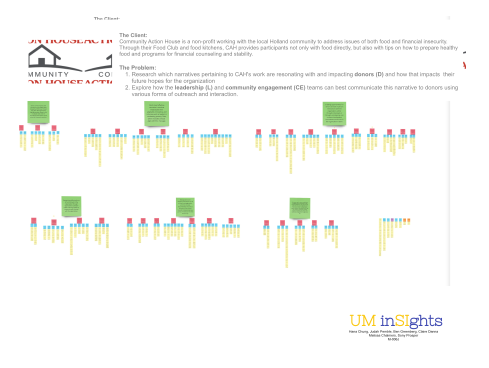

Community Action House (CAH)
Consulted with a not-for-profit agency, focused on ending poverty, to make recommendations for retaining and growing its donor base.
Client
Community Action House (CAH) is a not-for-profit agency, in Holland, MI
Project Type/Services
Consultation and Program Evaluation
Date
September - December 2021
Project Roles
Consultant: Conducted Background & Program Research, Interviews, and Data Analysis; Co-Authored Final Report
Project Overview
- Community Action House (CAH) is a not-for profit agency, focused on ending poverty and paving the road to prosperity for members of the surrounding community of Holland, Michigan. The agency provides people with food, clothing, shelter, and education/training. For the University of Michigan's School of Information (UMSI) Contextual Inquiry and Consulting Foundations course's semester-long team project, our team of 4 consulted with Community Action House to provide them with insights and recommendations which will help them reach their ambitious fundraising objectives for the next calendar year.
- For our project, we conducted and analyzed extensive data from qualitative interviews with stakeholders, including board members, donors, and staff, and then presented the data in the form of a consultation report, highlighting findings and recommendations. I served multiple roles on the project, including conducting background research on best practices for communicating with donors, interviewing stakeholders, analyzing and presenting data, and writing components of the final consultation report.
Project Execution
Steps along the way as part of the consultation process included:
Completed Background Research Reports
Each member of the consulting team focused on different aspects of the problem space, including:
- Nonprofit customer relations management trends
- Strategies for nonprofits to engage with donors on social media
- Donor motivations and behaviors
- Best practices for communicating with donors
Observed and Analyzed Artifacts
- “Artifacts” = pieces of content and visualizations of the work process for CAH's Community Engagement Team
- Artifacts included: CAH's website, Instagram Posts, Thanksgiving Mailer, Screenshots of Asana and Loomly, post metrics from various social media platforms
Created Protocol and Interviewed 7 People, Across Stakeholder Groups
- Stakeholder groups included: CAH leadership, board members, donors, donor/volunteers, and community engagement/staff members
Performed Qualitative Data Analysis (constructed an Affinity Wall with interview and artifact data)
Collated Main Themes and Findings and Made Recommendations